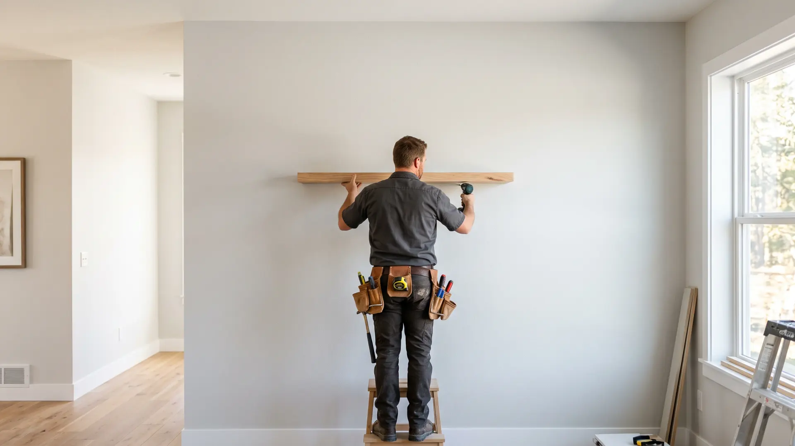

Fictief voorbeeldbedrijf, gebouwd door Belvanger om te laten zien wat mogelijk is. Zelf zo'n website laten bouwen →

Allround klusbedrijf · regio Zwolle
Van sloopklus tot oplevering, wij pakken elke klus in huis aan. Keuken, badkamer, zolder of kozijnen: één vaste vakman, een nette afwerking en een vaste prijs die we vooraf afspreken.
Wat wij oppakken
Eén klusser voor élke kamer. Kies waar u wilt beginnen, wij pakken de hele lijst aan. Van kleine reparatie tot complete verbouwing.
Inclusief afvoer en watertoevoer aansluiten, apparatuur inbouwen en het oude blad netjes verwijderen.
Van sloop en leidingwerk tot tegelen, sanitair plaatsen en waterdicht afkitten. Alles door dezelfde vakman.
Extra ruimte benutten: isolatie, wanden, verlichting en opbergoplossingen op maat gemaakt.
Strak afgekit, netjes geschilderd en soepel sluitend. Ook inbraakwerend beslag monteren wij graag.
Van fundering en frame tot dakbedekking en afwerking. Weer- en windbestendig gebouwd om jaren mee te gaan.
De klusjes die blijven liggen: een klemmende deur, een scheur in de muur, een tv of kast netjes aan de wand.
Van ruw tot afgewerkt, één vakman.
Familiebedrijf · vaste prijs vooraf
Ons werk
Straks staan hier de echte foto's van úw projecten. Zo laat u nieuwe klanten precies zien wat ze van u kunnen verwachten.
Over ons
Klusbedrijf De Vries is een familiebedrijf. Wij komen langs, kijken wat uw woning echt nodig heeft en spreken vooraf een vaste prijs af. U krijgt altijd dezelfde vakman aan de deur, een strakke afwerking en een werkplek die netjes wordt achtergelaten.
Bel direct of vraag een vrijblijvende offerte aan. Wij komen langs, denken mee en spreken vooraf een vaste prijs af.
038 - 303 15 70Ma t/m za bereikbaar · offerte doorgaans binnen 24 uur.